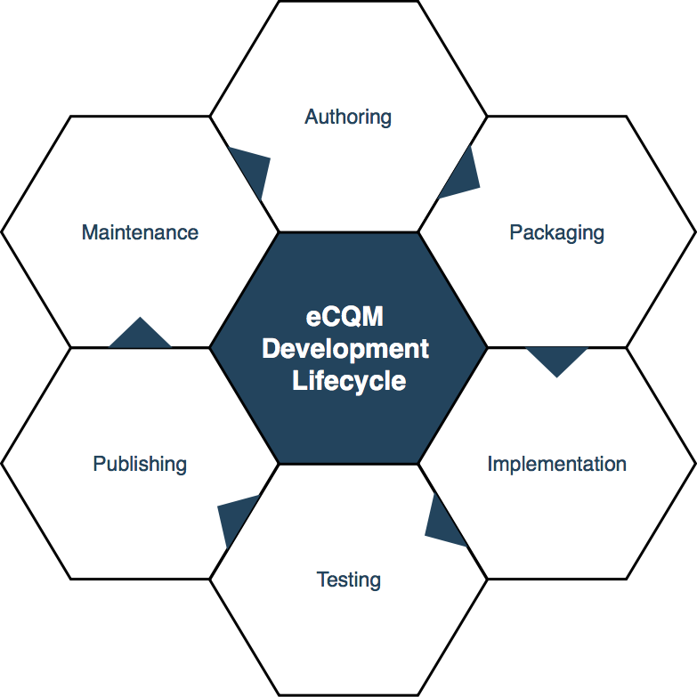

The eCQM Methodology Implementation Guide defines a methodology for developing and evaluating Electronic Clinical Quality Measures (eCQM). In order to enforce the methodology this implementation guide defines a set of FHIR profiles, which are necessary to evaluate eCQMs. The profiles in this implementation guide provide a common foundation for building, sharing, and evaluating eCQMs across quality improvement efforts in the US Realm.
The eCQM methodology defined within this implementation guide adheres to the following lifecycle:

{% include container-end.html %} {% include footer.html %}